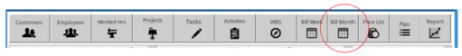
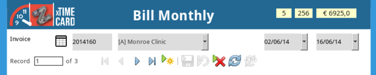
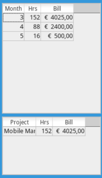
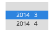
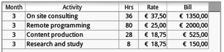
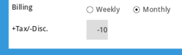
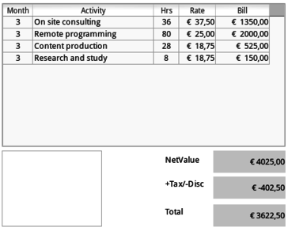
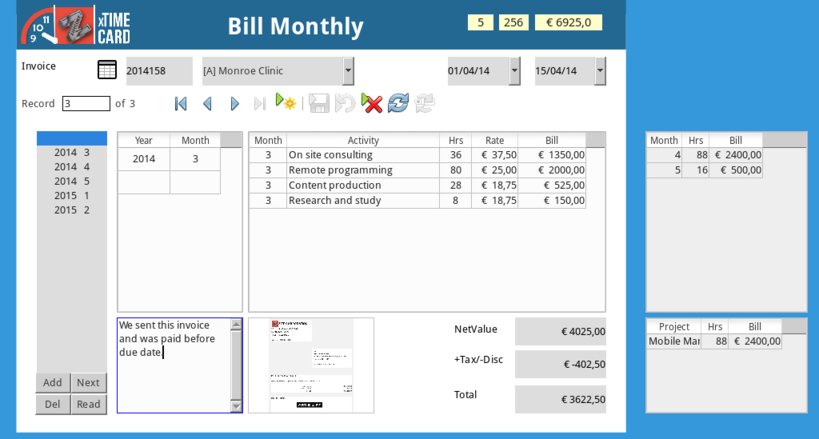
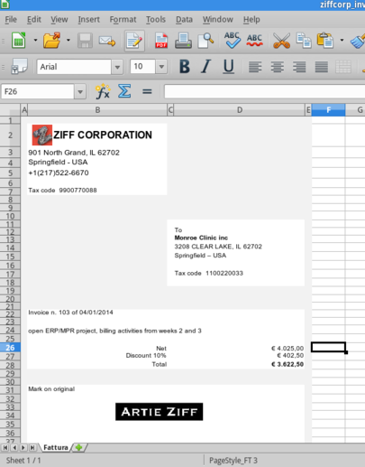

BillMonthly
Created lunedì 23 febbraio 2015
Bookkeeping
The weekly billing procedure is not meant to substitute accounting software or bookkeeping, it helps to collect all worked hours in a single view and allows you to have the correct number to actually issue your invoice.

Fill the header
Write your invoice number and select customer (will show only those for monthly billing), set date and due date of payment. Notice on the upper right you find total earnings.

Review open items
On the right you find all worked hours ready to bill, they are aggregated by month. You may have more projects on the same customer therefore when you select a month in the next table you see how hours are distributed over projects. Here we have a single project for Monroe Clinic, we want to bill month 3.

Add item to invoice
Select month 3 and press add, refresh.

Invoice get filled up with four items, notice on the right month 3 is not visible anymore.

Discount or VAT tax
Eventually we agree with our customer for a discount or we discover that we deal with a EU or non-EU country where there is obligation of VAT tax. We may go back in the customer record and change, here we gave 10% discount to Monroe Clinic.

We see that our invoice has a row with -10%.

Print and file invoice
Print your invoice as you prefer, you may also use a spreadsheet or a document. Fill properly with these numbers and scan it as image (jpg, png). Double click on the white box to upload your scan, add a note if you wish and save.

As a reference

Review from dashboard

Backlinks:
Home:Software:xTimeCard:Usage